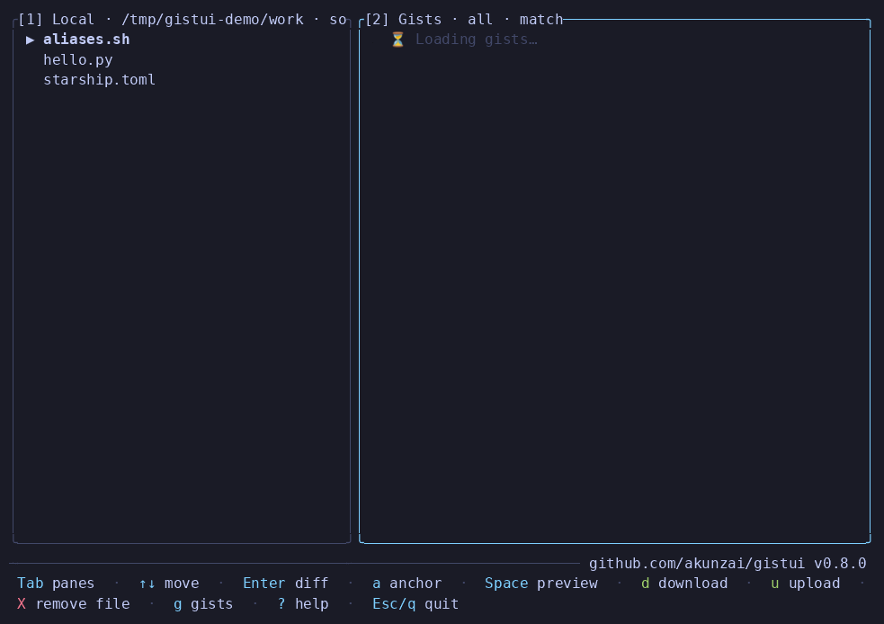
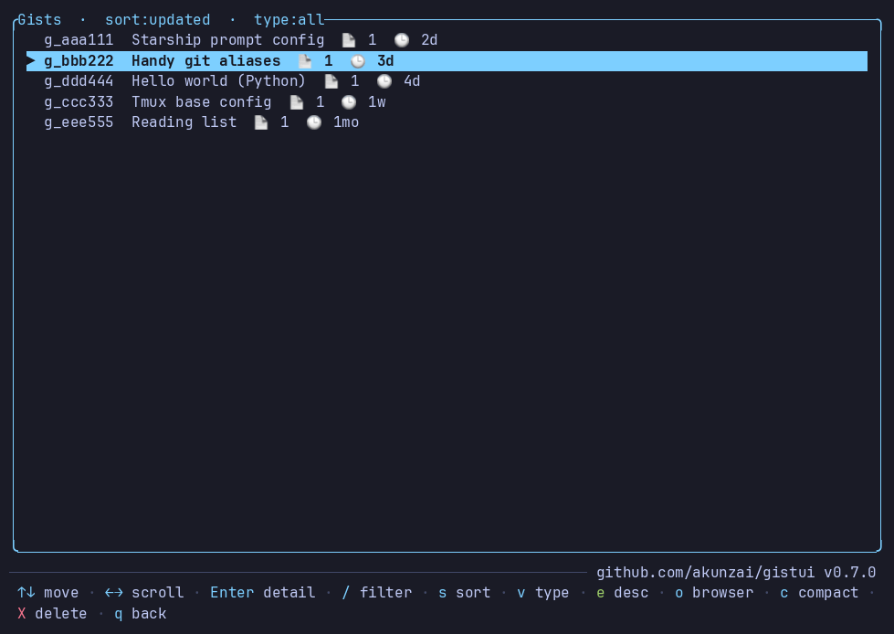

A terminal UI for managing GitHub Gists — browse, diff, sync, and pin your gists and pair them with files in your working directory, all through the GitHub CLI.
$ curl -fsSL https://raw.githubusercontent.com/akunzai/gistui/main/install.sh | bash
Detects your platform, verifies the SHA-256 checksum, installs to ~/.local/bin. Linux · macOS · Windows (Git Bash).
On Windows (PowerShell): irm https://raw.githubusercontent.com/akunzai/gistui/main/install.ps1 | iex
On macOS / Linux with Homebrew: brew install akunzai/tap/gistui
With a Rust toolchain from crates.io: cargo install gistui

A real workflow around your Gists — not just another API wrapper.
gh gistThe official CLI is non-interactive and text-only. gistui adds a full TUI: visual word-level diffs, anchor-driven ranking of gists against your working directory, and one-key pinned sync.
Never leave the terminal. Work directly against your local files and pair gists with the directory you launched from — no browser tabs, no copy-paste round trips.
An existing file is never overwritten without a diff and a y/n confirm, and no GitHub token is ever stored — authentication is delegated to gh.
Everything runs through your authenticated gh session — no GitHub token is ever stored by the app.
Local files and gists side by side, with smart match-ranking that floats the right gist to the top — and a pinned pair stays on top.
Unified diffs with word-level inline changes and syntax-highlighted context. Direction follows the focused pane — upload or download view.
An existing file is never overwritten without first showing its diff and a y/n confirmation. No surprises.
Pin local ↔ gist pairs, see sync status at a glance (synced / local-newer / remote-newer), and smart-sync where the newer side wins.
Manage gists as a whole: edit descriptions, delete, open in the browser, read comments, and compact a gist's revision history.
Scrollable, syntax-highlighted preview of any gist file; copy a gist's URL or its full content to the system clipboard.
Press g for the gist manager — one row per gist, with descriptions, file counts and ages.

gistui shells out to gh at runtime, so it must be installed and authenticated wherever you run it.
Install gh and run gh auth login once.
Any modern terminal with a monospace font; emoji glyphs make the status icons nicer.
pbcopy, wl-copy, xclip/xsel, or clip for copy support.